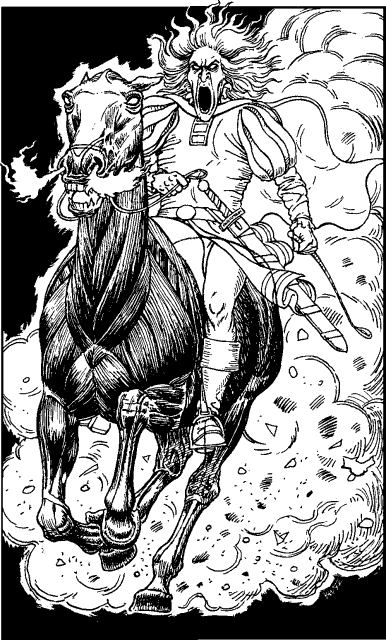

240
At close quarters, the city of Amory gives off an odour of disease and decay. Its flagstoned streets are cracked and broken open by plants, the roofs of its once-fine houses have long since caved in, and every surface is damp and mildewed. It is also completely deserted; even the rats have left.
You seek shelter in one of the few buildings with a roof still intact. The furnishings that you discover here are made of the finest Durenese oak and Salonese leather, but none withstand your weight. Everything has rotted and falls to shreds at a touch. You are clearing debris from the floor to make a place to sleep when suddenly you hear hoofbeats in the street outside. You rush to the open door and see, to your shocked surprise, a ghostly rider astride a black horse come galloping down the narrow avenue. Tongues of red flame shoot from the horse’s nostrils and it leaves in its wake a trail of green mist.

If you have ever visited the town of Quarlen or the Isle of Ghosts in a previous Lone Wolf adventure, turn to 279.
If you have visited neither of these places, turn to 205.